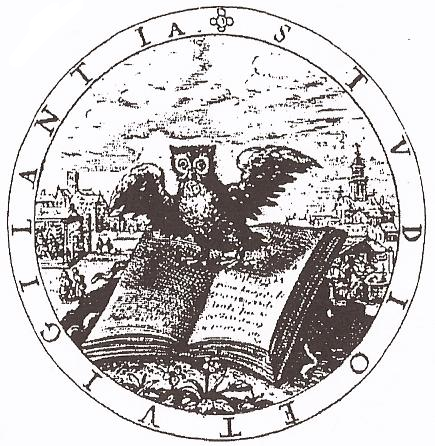

Ort: Pavia
Zeitraum: 07.11. bis 08.11.2025
Die 13. Jahrestagung des InterDisziplinären Kolloquiums war als Fortsetzung und zugleich zur Konkretisierung der breit gefächerten Vorjahresdiskussion um die Voraussetzungen und Folgeerscheinungen des ökonomischen Denkens in Forschung und Lehre intendiert. Ausgehend von der aktuellen Bedeutungsverschiebung des „Performanz”-Begriffs im Sinne einer reduktiven Vermarktungslogik sollten aus der Sicht unterschiedlicher Disziplinen die Wechselwirkungen zwischen wissenschaftlicher Arbeit und den unterschiedlichen Formen ihrer Selbstdarstellung untersucht werden. Neben politischen und wirtschaftlichen Dynamiken standen somit auch epistemische Aspekte des Performativen zur Diskussion, die bereits in statu nascendi der okzidentalen Wissenschaft eine Rolle gespielt haben.